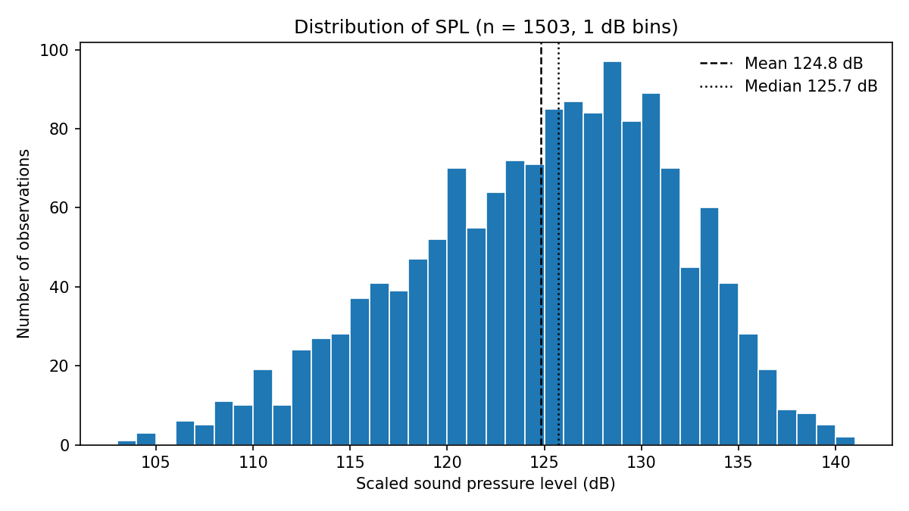
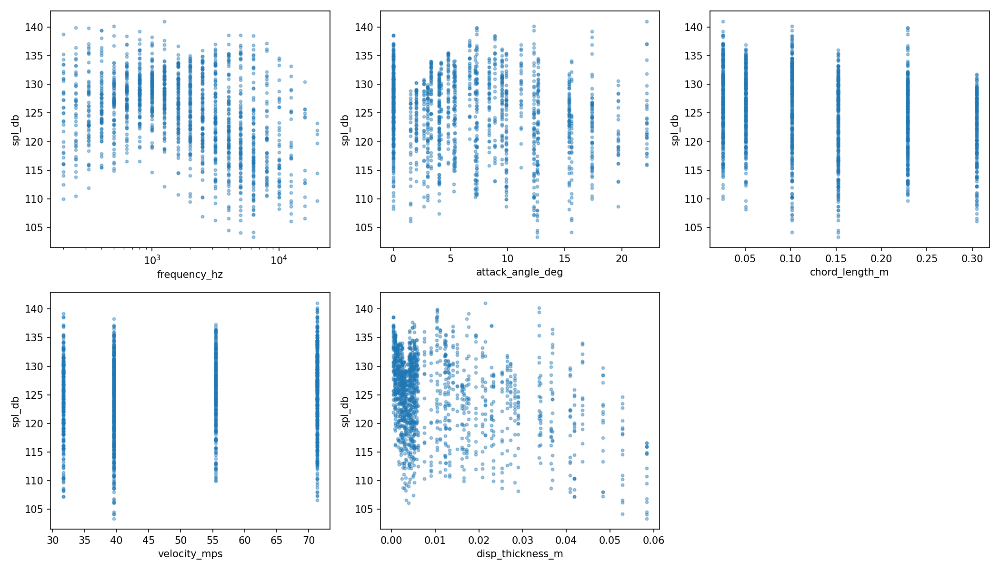
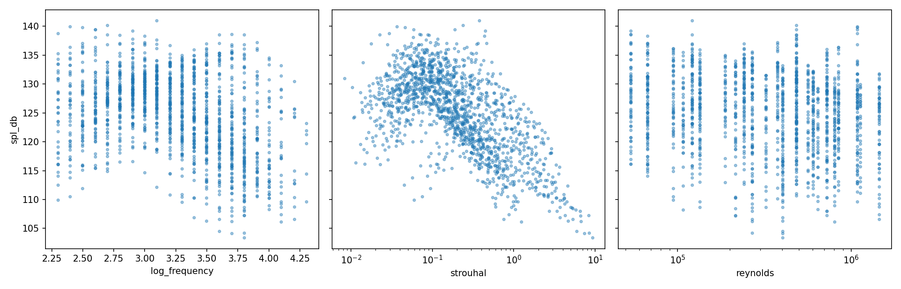
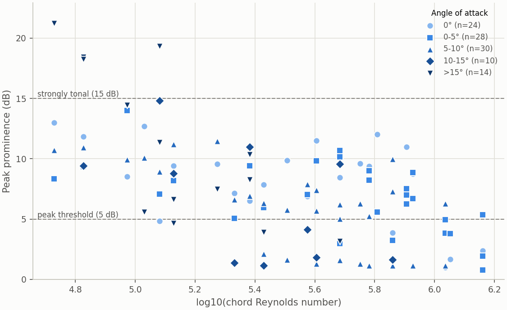

Data exploration¶
These figures show the full dataset (all 1503 rows, including the test
hold-out) before any model is fitted. They are written to doc/generated/
by src/explore_plots.py. To update this page:
python src/explore_plots.py --no-show
sphinx-build -b html doc doc/_build/html
Distribution of the target¶


Number of observations in each 1 dB band of scaled sound pressure level.¶
SPL ranges from about 103 to 141 dB, with a mean of 124.8 dB and a standard deviation of 6.9 dB. The distribution is skewed to the left (skewness about −0.4): most measurements lie between 120 and 135 dB, with a longer tail of quiet conditions. The mean is slightly below the median (125.7 dB) for the same reason. Few rows lie in either tail, so models have little data to learn from there. This helps explain why the linear baseline pulls its predictions towards the mean (see Results).
Feature set A: the raw inputs¶


SPL against each of the five raw inputs. Frequency is on a log axis.¶
Chord length and velocity take only six and four distinct values, and the angle of attack 27, so the data form vertical bands rather than a continuous cloud. Within every band SPL spreads over 20 to 30 dB, so no single input explains much of the variance on its own. The average SPL rises slightly up to about 800 Hz and then falls at higher frequencies. This hump is a non-linear shape that a straight line in frequency cannot follow.
Feature set B: the physics-derived features¶


SPL against the three features that set B adds to set A: log10 frequency, Strouhal number and chord Reynolds number. Strouhal and Reynolds numbers are on log axes.¶
The Strouhal number, which combines frequency, displacement thickness and velocity, collapses the data far more tightly than any raw input. Most of the loudest points lie at Strouhal numbers of roughly 0.03 to 0.2, and SPL falls steadily at higher values. This suggests the spectra share a similar shape once frequency is scaled this way. The relationship is still curved, so even with this feature a linear model cannot fit it fully. Reynolds number, like chord and velocity, shows vertical bands with a wide SPL spread in each.
Tonal peaks¶


Each dot is one setup (one measured spectrum): how far its biggest peak stands above its surroundings (peak prominence), against log10 of the chord Reynolds number. Colour and marker show the angle band.¶
Some spectra have a narrow tonal peak standing well above the broadband level. All four strongly tonal setups (prominence of 15 dB or more) have the smallest chord (0.0254 m), an angle of 17.4–22.2° and a Reynolds number of at most 1.2 × 10⁵. In general, prominence falls as the Reynolds number rises: the median is about 10 dB below log10(Re) = 5.2, but about 6 dB above 5.6.